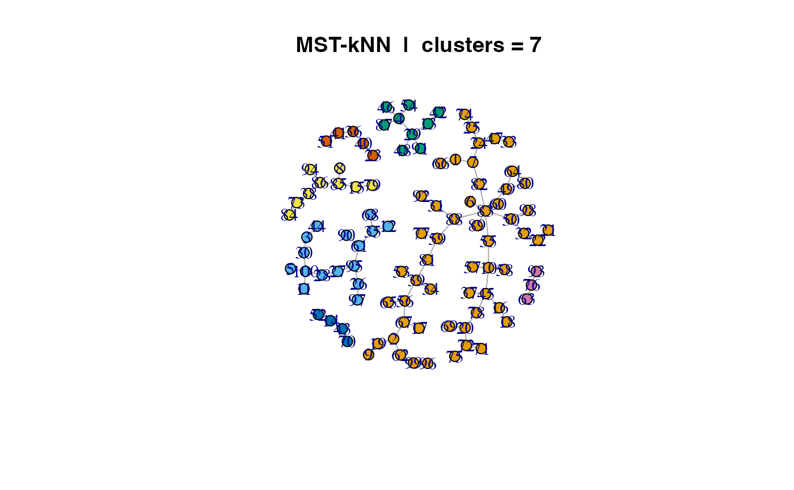

Performs the MST-kNN clustering algorithm which generates a clustering solution with automatic number-of-clusters determination by recursively intersecting the Minimum Spanning Tree (MST) and the k-Nearest Neighbor (kNN) graphs.
Examples
set.seed(1987)
n <- 100; m <- 15
x <- matrix(runif(n * m, min = -5, max = 10), nrow = n, ncol = m)
d <- base::as.matrix(stats::dist(x, method = "euclidean"))
library("mstknnclust")
results <- mst.knn(d)
library("igraph")
#>
#> Attaching package: ‘igraph’
#> The following objects are masked from ‘package:stats’:
#>
#> decompose, spectrum
#> The following object is masked from ‘package:base’:
#>
#> union
plot(results$network,
vertex.size = 8,
vertex.color = igraph::components(results$network)$membership,
layout = igraph::layout_with_fr(results$network, niter = 10000),
main = paste("MST-kNN | clusters =", results$cnumber))
